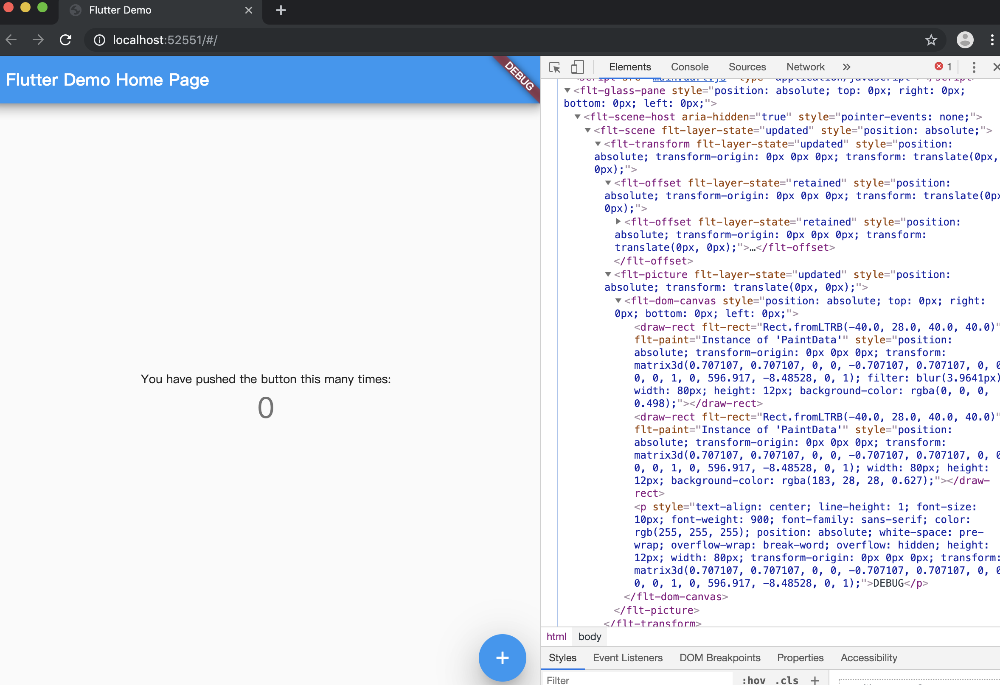

<!DOCTYPE html>
<html lang="en">

<head><meta name="generator" content="Hexo 3.9.0">
  <meta charset="utf-8">
    
  <meta name="viewport" content="width=device-width, initial-scale=1, maximum-scale=1">
  <title>
    flutter for web |  MonkeyInWind
  </title>
  
  <link rel="shortcut icon" href="/favicon.ico">
  
  <link rel="stylesheet" href="/css/style.css">
  <script src="/js/pace.min.js"></script>

  

<script type="text/javascript">
(function(i,s,o,g,r,a,m){i['GoogleAnalyticsObject']=r;i[r]=i[r]||function(){
(i[r].q=i[r].q||[]).push(arguments)},i[r].l=1*new Date();a=s.createElement(o),
m=s.getElementsByTagName(o)[0];a.async=1;a.src=g;m.parentNode.insertBefore(a,m)
})(window,document,'script','//www.google-analytics.com/analytics.js','ga');

ga('create', 'UA-155359064-1', 'auto');
ga('send', 'pageview');

</script>


  

</head>

</html>

<body>
  <div id="app">
    <main class="content">
      <section class="outer">
  <article id="post-flutterForWeb" class="article article-type-post" itemscope
  itemprop="blogPost" data-scroll-reveal>

  <div class="article-inner">
    
    <header class="article-header">
       
<h1 class="article-title sea-center" style="border-left:0" itemprop="name">
  flutter for web
</h1>
  

    </header>
    

    
    <div class="article-meta">
      <a href="/post/flutterForWeb/" class="article-date">
  <time datetime="2019-09-20T23:31:19.000Z" itemprop="datePublished">2019-09-21</time>
</a>
      
    </div>
    

    
    


    

    <div class="article-entry" itemprop="articleBody">
      


      

      
      <p>谷歌开发者大会上宣布flutter1.9正式发布，并且flutter_web已经合到dev合master。<br>我们来体验一下。  </p>
<a id="more"></a>
<p>首先切换到master并升级flutter到最新版本</p>
<figure class="highlight plain"><table><tr><td class="gutter"><pre><span class="line">1</span><br><span class="line">2</span><br></pre></td><td class="code"><pre><span class="line">flutter channel master</span><br><span class="line">flutter upgrade</span><br></pre></td></tr></table></figure>

<p>安装<code>webdev</code></p>
<figure class="highlight plain"><table><tr><td class="gutter"><pre><span class="line">1</span><br></pre></td><td class="code"><pre><span class="line">flutter pub global activate webdev</span><br></pre></td></tr></table></figure>

<p>这里需要注意一下，安装之后看提示还要添加环境变量</p>
<figure class="highlight plain"><table><tr><td class="gutter"><pre><span class="line">1</span><br><span class="line">2</span><br><span class="line">3</span><br><span class="line">4</span><br><span class="line">5</span><br><span class="line">6</span><br><span class="line">7</span><br></pre></td><td class="code"><pre><span class="line">Installed executable webdev.</span><br><span class="line">Warning: Pub installs executables into $HOME/.pub-cache/bin, which is not on your path.</span><br><span class="line">You can fix that by adding this to your shell&apos;s config file (.bashrc, .bash_profile, etc.):</span><br><span class="line"></span><br><span class="line">  export PATH=&quot;$PATH&quot;:&quot;$HOME/.pub-cache/bin&quot;</span><br><span class="line"></span><br><span class="line">Activated webdev 2.5.1.</span><br></pre></td></tr></table></figure>

<p>打开<code>~ &gt; .bash_profile</code>把<code>export PATH=&quot;$PATH&quot;:&quot;$HOME/.pub-cache/bin&quot;</code>添加进去，然后更新环境变量。</p>
<figure class="highlight plain"><table><tr><td class="gutter"><pre><span class="line">1</span><br></pre></td><td class="code"><pre><span class="line">source ~/.bash_profile</span><br></pre></td></tr></table></figure>

<p>到这<code>webdev</code>就完事了，命令行敲<code>webdev</code>测试一下</p>
<figure class="highlight plain"><table><tr><td class="gutter"><pre><span class="line">1</span><br><span class="line">2</span><br></pre></td><td class="code"><pre><span class="line">webdev</span><br><span class="line">/Users/xxx/.pub-cache/bin/webdev: line 7: dart: command not found</span><br></pre></td></tr></table></figure>

<p>惊不惊喜，意不意外，这是因为<code>dart</code>没有添加环境变量。<br>在<code>.bash_profile</code>中添加dart环境变量</p>
<figure class="highlight plain"><table><tr><td class="gutter"><pre><span class="line">1</span><br><span class="line">2</span><br></pre></td><td class="code"><pre><span class="line">export DART_HOME=/Users/xxx/sdk/flutter/bin/cache/dart-sdk/bin</span><br><span class="line">export PATH=$&#123;DART_HOME&#125;:$&#123;PATH&#125;</span><br></pre></td></tr></table></figure>

<p>刷新环境变量</p>
<figure class="highlight plain"><table><tr><td class="gutter"><pre><span class="line">1</span><br></pre></td><td class="code"><pre><span class="line">source ~/.bash_profile</span><br></pre></td></tr></table></figure>

<p>重新试一下<code>webdev</code>如果显示如下，说明没有问题</p>
<figure class="highlight plain"><table><tr><td class="gutter"><pre><span class="line">1</span><br><span class="line">2</span><br><span class="line">3</span><br><span class="line">4</span><br><span class="line">5</span><br><span class="line">6</span><br><span class="line">7</span><br><span class="line">8</span><br><span class="line">9</span><br><span class="line">10</span><br><span class="line">11</span><br><span class="line">12</span><br><span class="line">13</span><br><span class="line">14</span><br></pre></td><td class="code"><pre><span class="line">A tool to develop Dart web projects.</span><br><span class="line"></span><br><span class="line">Usage: webdev &lt;command&gt; [arguments]</span><br><span class="line"></span><br><span class="line">Global options:</span><br><span class="line">-h, --help       Print this usage information.</span><br><span class="line">    --version    Prints the version of webdev.</span><br><span class="line"></span><br><span class="line">Available commands:</span><br><span class="line">  build   Run builders to build a package.</span><br><span class="line">  help    Display help information for webdev.</span><br><span class="line">  serve   Run a local web development server and a file system watcher that rebuilds on changes.</span><br><span class="line"></span><br><span class="line">Run &quot;webdev help &lt;command&gt;&quot; for more information about a command.</span><br></pre></td></tr></table></figure>

<p>这里需要注意一下，如果没有用<code>flutter</code>自带的<code>dart-sdk</code>而是单独安装，这里可能会因为dart版本与flutter版本不匹配而出现如下提示</p>
<figure class="highlight plain"><table><tr><td class="gutter"><pre><span class="line">1</span><br><span class="line">2</span><br></pre></td><td class="code"><pre><span class="line">Can&apos;t load Kernel binary: Invalid kernel binary format version.</span><br><span class="line">No active package webdev.</span><br></pre></td></tr></table></figure>

<p>出现这种情况把dart卸载</p>
<figure class="highlight plain"><table><tr><td class="gutter"><pre><span class="line">1</span><br></pre></td><td class="code"><pre><span class="line">brew uninstall dart</span><br></pre></td></tr></table></figure>

<p>然后如前边所述将flutter内置的dart-sdk添加到环境变量就可以了。<br>启用<code>flutter_web</code></p>
<figure class="highlight plain"><table><tr><td class="gutter"><pre><span class="line">1</span><br></pre></td><td class="code"><pre><span class="line">flutter config --enable-web</span><br></pre></td></tr></table></figure>

<p>出现如下提示</p>
<figure class="highlight plain"><table><tr><td class="gutter"><pre><span class="line">1</span><br></pre></td><td class="code"><pre><span class="line">Setting &quot;enable-web&quot; value to &quot;true&quot;.</span><br></pre></td></tr></table></figure>

<p>接下来创建一个flutter项目</p>
<figure class="highlight plain"><table><tr><td class="gutter"><pre><span class="line">1</span><br><span class="line">2</span><br></pre></td><td class="code"><pre><span class="line">flutter create myapp</span><br><span class="line">cd myapp</span><br></pre></td></tr></table></figure>

<p>可以看见目录下多了一个<code>web</code>文件夹里边是一个<code>index.html</code>，内容如下</p>
<figure class="highlight plain"><table><tr><td class="gutter"><pre><span class="line">1</span><br><span class="line">2</span><br><span class="line">3</span><br><span class="line">4</span><br><span class="line">5</span><br><span class="line">6</span><br><span class="line">7</span><br><span class="line">8</span><br><span class="line">9</span><br><span class="line">10</span><br></pre></td><td class="code"><pre><span class="line">&lt;!DOCTYPE html&gt;</span><br><span class="line">&lt;html&gt;</span><br><span class="line">&lt;head&gt;</span><br><span class="line">  &lt;meta charset=&quot;UTF-8&quot;&gt;</span><br><span class="line">  &lt;title&gt;myapp&lt;/title&gt;</span><br><span class="line">&lt;/head&gt;</span><br><span class="line">&lt;body&gt;</span><br><span class="line">  &lt;script src=&quot;main.dart.js&quot; type=&quot;application/javascript&quot;&gt;&lt;/script&gt;</span><br><span class="line">&lt;/body&gt;</span><br><span class="line">&lt;/html&gt;</span><br></pre></td></tr></table></figure>

<p>从这里可以看见，最终也是编译成js文件。<br>先看一下已连接的设备</p>
<figure class="highlight plain"><table><tr><td class="gutter"><pre><span class="line">1</span><br><span class="line">2</span><br><span class="line">3</span><br><span class="line">4</span><br><span class="line">5</span><br><span class="line">6</span><br></pre></td><td class="code"><pre><span class="line">➜  myapp flutter devices</span><br><span class="line">3 connected devices:</span><br><span class="line"></span><br><span class="line">macOS  • macOS  • darwin-x64     • Mac OS X 10.14.5 18F132</span><br><span class="line">Chrome • chrome • web-javascript • Google Chrome 76.0.3809.132</span><br><span class="line">Server • web    • web-javascript • Flutter Tools</span><br></pre></td></tr></table></figure>

<p>这里合之前相比多了<code>Chrome</code>和<code>Server</code></p>
<p>在chrome里跑一下项目</p>
<figure class="highlight plain"><table><tr><td class="gutter"><pre><span class="line">1</span><br></pre></td><td class="code"><pre><span class="line">flutter run -d chrome</span><br></pre></td></tr></table></figure>

<p>效果如下，一个熟悉的页面。<br><br>可以看见大多数都是自定义标签，当然也不全是自定义，比如中间那一行文本和数字就是<code>p</code>标签，关于渲染<code>flutter</code>用了<a href="https://developers.google.com/web/updates/2018/01/paintapi" target="_blank" rel="noopener">CSS Paint</a>（能不能打开看缘分），就是用css画图，挺有意思的api。<br>点<code>sources</code>，然后<code>command+o</code><br><br>可以看见这里并不是js文件，而是dart文件。<br>选择<code>main.dart</code>，看到的就是<code>main.dart</code>的源码。<br>接下来说一下调试，直接用chrome的开发者工具查找DOM是比较困难的，这个时候需要<code>android Studio</code>，在<code>android Studio</code>中打开<code>myapp</code>，设备选择<code>chrome(web)</code>，点绿色的三角跑起来<br><br>在<code>View &gt; Tool Windows</code>下选择<code>Flutter Inspector</code><br><br>打开之后是这个样子<br><br>可以看到不知道多少个层级<br><br>这个按钮可以在页面上显示<code>widget</code>的边界<br><br>这个准星一样的按钮相当于浏览器的审查元素，点击之后页面左下角会出现一个放大镜，想要重新在页面上选择元素需要点击放大镜，也可以在<code>Inspector</code>之中直接选择，页面上对应的元素会高亮。<br>这里再说一下另一种方式，chrome内置了<code>Dart DevTools</code><br>项目跑起来之后点下边这个按钮<br><br>chrome会弹出个新窗口<br><br>和<code>Flutter Insector</code>类似，但是更好用一点。</p>
<p>关于<code>dart</code>文件的调试，和js一样可以打断点<br></p>
<p>接下来是打包</p>
<figure class="highlight plain"><table><tr><td class="gutter"><pre><span class="line">1</span><br><span class="line">2</span><br></pre></td><td class="code"><pre><span class="line">➜  myapp flutter build web</span><br><span class="line">Compiling lib/main.dart for the Web...                             26.4s</span><br></pre></td></tr></table></figure>

<p>build结束后看一下<code>build &gt; web</code>目录下</p>
<figure class="highlight plain"><table><tr><td class="gutter"><pre><span class="line">1</span><br><span class="line">2</span><br></pre></td><td class="code"><pre><span class="line">➜  web ls</span><br><span class="line">assets           index.html       main.dart.js     main.dart.js.map</span><br></pre></td></tr></table></figure>

<p><code>dart</code>被编译成了js</p>

      
      <!-- 打赏 -->
      
    </div>
    <footer class="article-footer">
      <!-- 
      <a data-url="http://yoursite.com/post/flutterForWeb/" data-id="ck50lw75b0004pqhsxdu4qgj3"
        class="article-share-link">分享</a>
      
       -->
    </footer>

  </div>

  
  
  <nav class="article-nav">
    
      <a href="/post/reactRouterNginx/" class="article-nav-link">
        <strong class="article-nav-caption">上一篇</strong>
        <div class="article-nav-title">
          
            用了react-router刷新404 nginx配置
          
        </div>
      </a>
    
    
  </nav>


  

  
  
<!-- valine评论 -->
<div id="vcomments-box">
    <div id="vcomments">
    </div>
</div>
<script src="//cdn1.lncld.net/static/js/3.0.4/av-min.js"></script>
<script src='https://cdn.jsdelivr.net/npm/valine@1.3.10/dist/Valine.min.js'></script>
<script>
    new Valine({
        el: '#vcomments',
        notify: false,
        verify: false,
        app_id: '',
        app_key: '',
        path: window.location.pathname,
        avatar: 'mp',
        placeholder: '给我的文章加点评论吧~',
        recordIP: true
    });
    const infoEle = document.querySelector('#vcomments .info');
    if (infoEle && infoEle.childNodes && infoEle.childNodes.length > 0) {
        infoEle.childNodes.forEach(function (item) {
            item.parentNode.removeChild(item);
        });
    }
</script>
<style>
    #vcomments-box {
        padding: 5px 30px;
    }

    @media screen and (max-width: 800px) {
        #vcomments-box {
            padding: 5px 0px;
        }
    }

    #vcomments-box #vcomments {
        background-color: #fff;
    }

    .v .vlist .vcard .vh {
        padding-right: 20px;
    }

    .v .vlist .vcard {
        padding-left: 10px;
    }
</style>

  

  
  
  

</article>

</section>
      <footer class="footer">
  <div class="outer">
    <ul class="list-inline">
      <li>
        &copy;
        2020-01
        MonkeyInWind
      </li>
      <li>
        <!--
        
          Power by
        
        
        <a href="https://hexo.io" target="_blank">Hexo</a> Theme <a href="https://github.com/Shen-Yu/hexo-theme-ayer" target="_blank">Ayer</a>
        
        -->
        <a target="_blank" href='https://github.com/MonkeyInWind'>GitHub</a>
      </li>
    </ul>
    <ul class="list-inline">
      <li>
        
      </li>
      <li>
        <!-- cnzz统计 -->
        
      </li>
    </ul>
  </div>
</footer>

    <div class="to_top">
        <div class="totop" id="totop">
  <i class="ri-arrow-up-line"></i>
</div>
      </div>
    </main>
    
    <aside class="sidebar">
      
        <button class="navbar-toggle"></button>
<nav class="navbar">
  
  <div class="logo">
    <a href="/"></a>
  </div>
  
  <ul class="nav nav-main">
    
    <li class="nav-item">
      <a class="nav-item-link" href="/">主页</a>
    </li>
    
    <li class="nav-item">
      <a class="nav-item-link" href="/archives">目录</a>
    </li>
    
    <li class="nav-item">
      <a class="nav-item-link" href="/categories">分类</a>
    </li>
    
    <li class="nav-item">
      <a class="nav-item-link" href="/about">关于我</a>
    </li>
    
  </ul>
</nav>
<nav class="navbar navbar-bottom">
  <ul class="nav">
    <li class="nav-item">
      
      <a class="nav-item-link nav-item-search"  title="Search">
        <i class="ri-search-line"></i>
      </a>
      
      
    </li>
  </ul>
</nav>
<div class="search-form-wrap">
  <div class="local-search local-search-plugin">
  <input type="search" id="local-search-input" class="local-search-input" placeholder="Search...">
  <div id="local-search-result" class="local-search-result"></div>
</div>
</div>
      </aside>
      <div id="mask"></div>

<!-- #reward -->
<div id="reward">
  <span class="close"><i class="ri-close-line"></i></span>
  <p class="reward-p"><i class="ri-cup-line"></i>请我喝杯咖啡吧~</p>
  <div class="reward-box">
    
    
  </div>
</div>
      <script src="/js/jquery-2.0.3.min.js"></script>
<script src="/js/jquery.justifiedGallery.min.js"></script>
<script src="/js/lazyload.min.js"></script>
<script src="/js/busuanzi-2.3.pure.min.js"></script>

  <script src="/fancybox/jquery.fancybox.min.js"></script>


  <script src="/js/tocbot.min.js"></script>
  <script>
    // Tocbot_v4.7.0  http://tscanlin.github.io/tocbot/
    tocbot.init({
      tocSelector: '.tocbot',
      contentSelector: '.article-entry',
      headingSelector: 'h1, h2, h3, h4, h5, h6',
      hasInnerContainers: true,
      scrollSmooth: true,
      positionFixedSelector: '.tocbot',
      positionFixedClass: 'is-position-fixed',
      fixedSidebarOffset: 'auto',
    });
  </script>


<script>
  var ayerConfig = {
    mathjax: false
  }
</script>

<script src="/js/ayer.js"></script>

<script src="https://cdn.jsdelivr.net/npm/jquery-modal@0.9.2/jquery.modal.min.js"></script>
<link rel="stylesheet" href="https://cdn.jsdelivr.net/npm/jquery-modal@0.9.2/jquery.modal.min.css">


<script type="text/javascript" src="https://js.users.51.la/20544303.js"></script>
  
  
  </div>
</body>

</html>